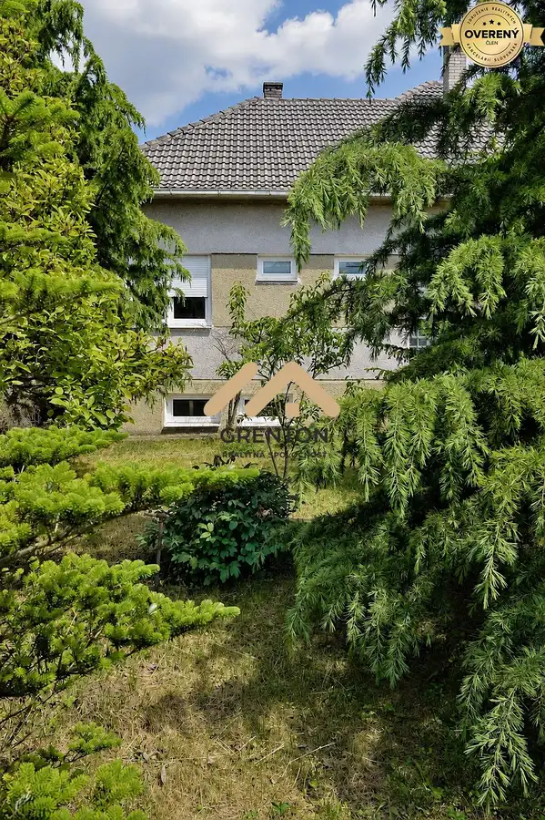
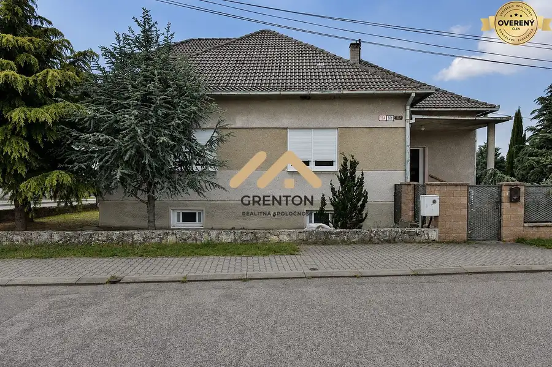
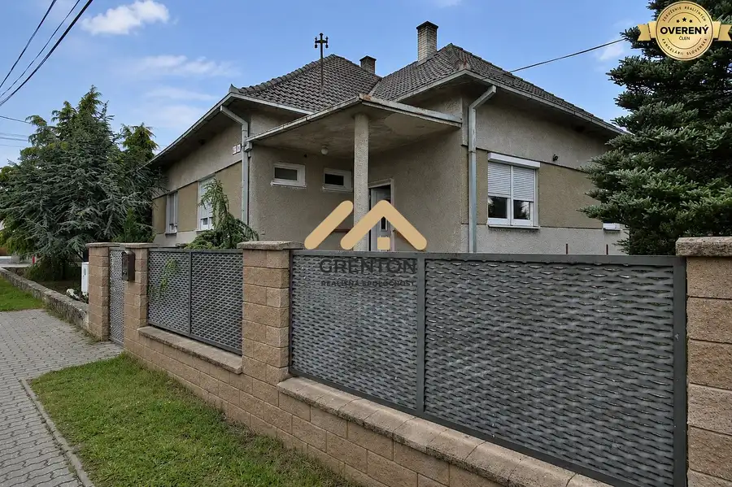
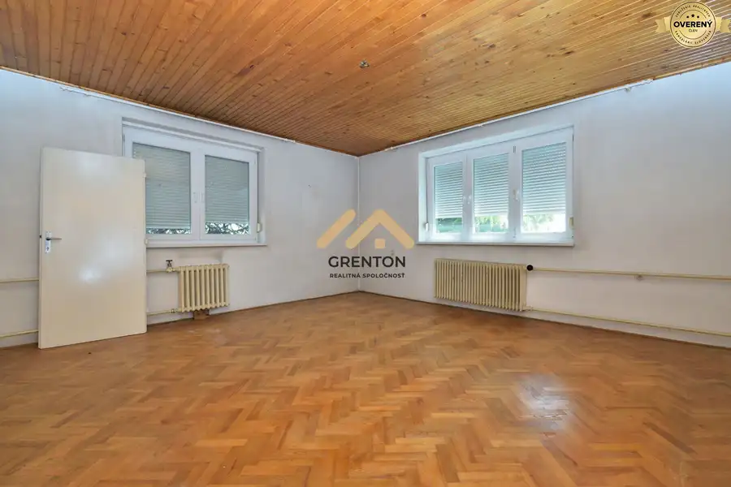
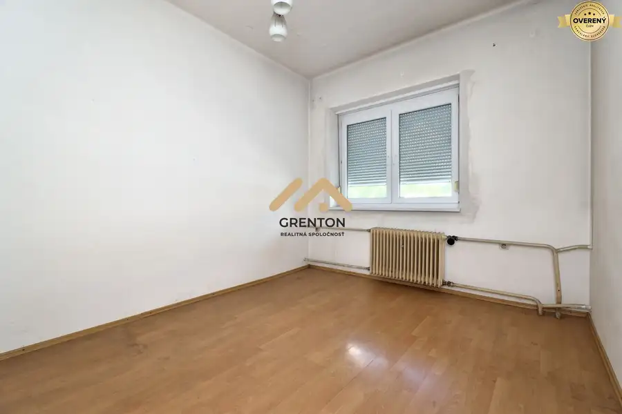
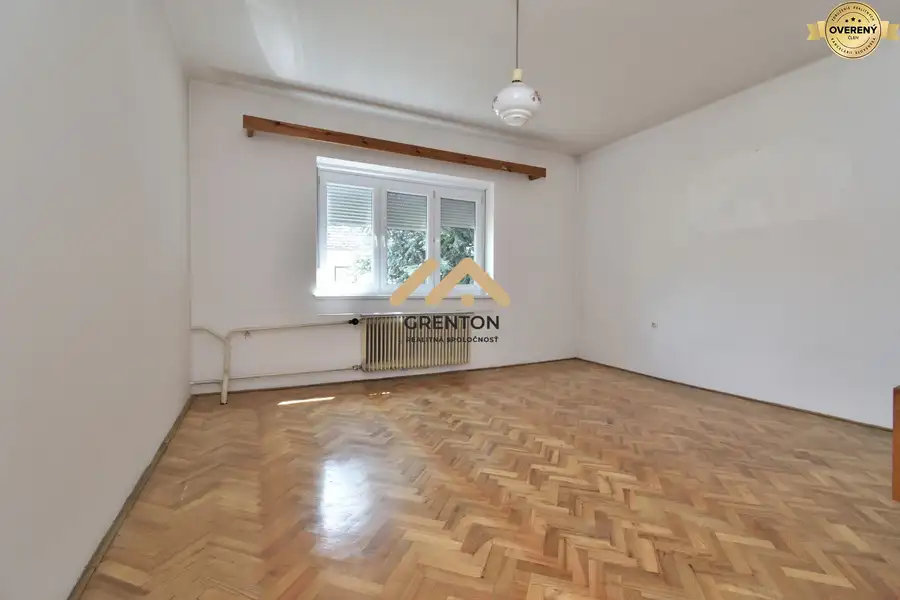

Na predaj murovaný dom 135 m2 + pivnica 96 m2, pozemok 916 m2, Lozorno
Lozorno







- Dispozícia4-izbový
- Plocha135 m²
- Poschodie0. z 2
- Stavčiastočne prerobený
O nehnuteľnosti
Na predaj rodinný dom s obrovským potenciálom v centre Lozorna, na Staničnej ulici.
Najväčšou pridanou hodnotou je rovinný pozemok 916 m2 so šírkou 32 a 40 metrov a s prístupom z dvoch ulíc. Ideálny na bývanie, podnikanie, výstavbu ďalšej nehnuteľnosti, rozdelenie pozemku alebo radovú zástavbu.
HLAVNÉ PREDNOSTI
2 samostatné široké vstupy na pozemok
Potenciál - dvojgeneračné bývanie, nadstavba 1. poschodia, prístavba
Po pozemok vhodný aj na podnikanie / investíciu
3 minúty na diaľnicu D2 - skvelá dostupnosť do Bratislavy
Všetky siete - plyn, voda, kanalizácia, elektrina v zemi
Pivnica 96,6 m2 + vysoké stropy takmer 3 metre
O DOME:
Murovaný dom z pálenej tehly s obdĺžnikovým pôdorysom a manzardovou strechou, skolaudovaný v roku 1968. Zastavaná plocha 137 m2.
Podlahová plocha: prízemie + podkrovie 135 m2 + pivnica 96,6 m2.
Železobetónové základy, betónové schodisko, masívne tehlové nosné múry.
Dispozícia: na prízemí vstupná hala, chodba, kúpeľňa, samostatné WC, kuchyňa s jedálňou a 3 izby (22,5 m2, 23,5 m2, 11,6 m2). Na poschodí chodba a izba 14,7 m2 + veľká nezateplená povala pripravená na rozšírenie.
Technický stav: Čiastočne rekonštruovaný za posledných 10-15 rokov. Plastové okná s dvojsklom a vonkajšími roletami, bezpečnostné plastové dvere, čiastočne nové podlahy, v dvoch izbách zachované pôvodné drevené parkety.
Pozemok: 916 m2, rovinatý, oplotený, s okrasným trávnikom, ovocnými a okrasnými stromami. Parkovanie pre viacero áut priamo na pozemku.
LOKALITA LOZORNO - VŠETKO PORUKE:
Kompletná občianska vybavenosť - ZŠ s MŠ, lekári, lekáreň, potraviny, športové ihriská, Centrum voľného času. Voľný čas - Lozornská priehrada, futbal, tenis, golf Pegas, cyklotrasy Záhorie / Malé Karpaty. Bratislava dostupná do 20 minút.
CENA je konečná a zahŕňa kompletný servis - províziu RK, všetky zmluvy, poplatky na katastri a u notára, vklad a prepis energií.
Možné financovanie hypotékou - zabezpečíme kompletný úverový servis.
Predaj zabezpečuje certifikovaný maklér NARKS.
Kontaktujte nás :) a dohodneme si termín obhliadky.
Parametre
- Rozloha pozemku
- 916 m²
- Zastavaná plocha
- 137 m²
- Celková rozloha
- 162 m²
- Úžitková plocha
- 135 m²
- Poschodie
- prízemie
- Počet poschodí
- 2
- Počet izieb
- 4
- Stav
- čiastočne prerobený
- Status
- aktívne
- Odvoz odpadu
- áno
- Voda
- verejný vodovod
- El. napätie
- 230/400V
- Plyn
- áno
- Kanalizácia
- áno
- Kúpeľňa
- áno
- Vykurovanie
- vlastné - plyn
- Pivnica
- áno
- Inžinierske siete
- áno
- Postavené z
- tehla
- Zariadenie
- nezariadený
- Zateplený objekt
- nie
- Energetický certifikát
- nie
- Bezbariérový prístup
- nie
- Okná
- plastové
- Terén
- rovina
- Prístupová cesta
- asfaltová cesta
- Dátum zverejnenia
- 2026-05-31
Kde to je
Mohlo by Vás zaujímať
 PozemokNové
88 800 €Lesné pozemky v katastri Bratislava - Dúbravka
Dúbravka, Bratislava
14800 m²
PozemokNové
88 800 €Lesné pozemky v katastri Bratislava - Dúbravka
Dúbravka, Bratislava
14800 m²
 ZáhradyNové
162 750 €Záhrada s možnosťou stavby na individuálnu rekreáciu, Lamač
Lamač, Bratislava
1550 m²
ZáhradyNové
162 750 €Záhrada s možnosťou stavby na individuálnu rekreáciu, Lamač
Lamač, Bratislava
1550 m²
 Rodinné domyNové
282 000 €Predané: Rodinný dom v DNV na predaj
Devínska Nová Ves, Bratislava
4-izbový100 m²
Rodinné domyNové
282 000 €Predané: Rodinný dom v DNV na predaj
Devínska Nová Ves, Bratislava
4-izbový100 m²